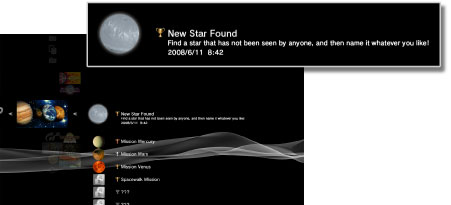

Game > Trofeecollectie
Trofeecollectie
U kunt trofeeën verdienen als u bepaalde doelen bereikt in games die de trofeefunctie ondersteunen.
Soorten trofeeën
Trofeeën worden in vier rangen ingedeeld. Die rangen zijn doorgaans gebaseerd op de moeilijkheidsgraad om de trofeeën te verdienen. De soorten beschikbare trofeeën en de voorwaarden om trofeeën te verdienen verschillen afhankelijk van het spel.

Uw trophy collection (trofeeën) controleren
1. |
Selecteer
|
|---|---|
2. |
Selecteer de game die u wenst te controleren.  |

Uw trofee-informatie opslaan op de PlayStation®Network-server
Indien u een PlayStation®Network-account aanmaakt, kunt u informatie over de trofeeën die u hebt verdiend opslaan op de PlayStation®Network-server. U kunt ook uw trophy collection (trofeeën) bekijken op het [Profiel]-scherm onder  (Vrienden) en de status van uw trofeeën vergelijken met die van vrienden.
(Vrienden) en de status van uw trofeeën vergelijken met die van vrienden.
Onder de volgende omstandigheden wordt trofee-informatie automatisch opgeslagen op de PlayStation®Network-server:
- Als u
 (Game) >
(Game) >  (Trofeecollectie) selecteert terwijl u bent aangemeld bij het PlayStation®Network
(Trofeecollectie) selecteert terwijl u bent aangemeld bij het PlayStation®Network - Als u (Vergelijk trofeeën) selecteert in het [Profiel]-scherm onder (Vrienden)
Opmerking
Raadpleeg ook (Vrienden) > [Vriendenlijst] > [Profielen bekijken] in deze handleiding.